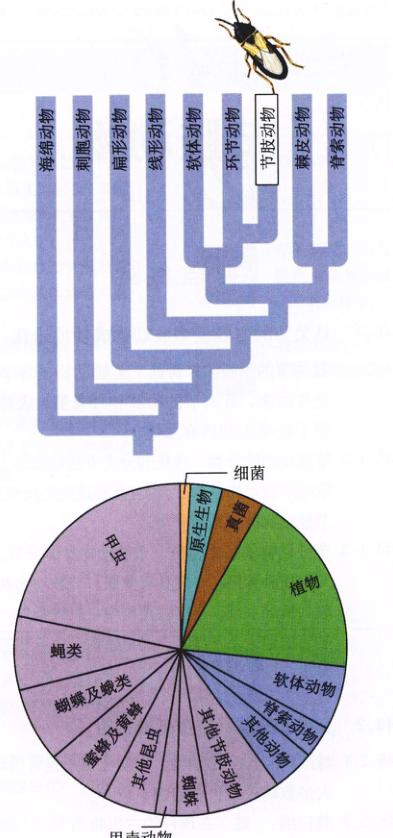
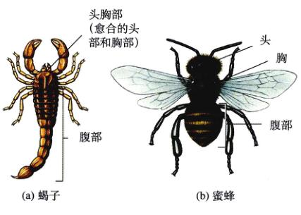
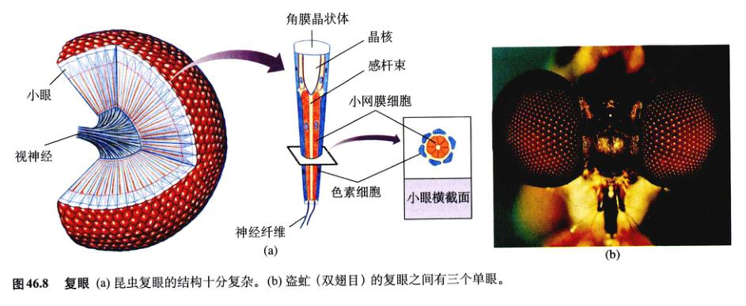
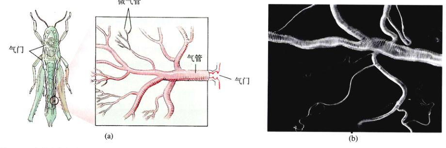
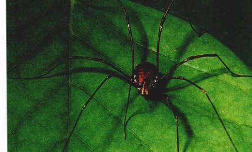
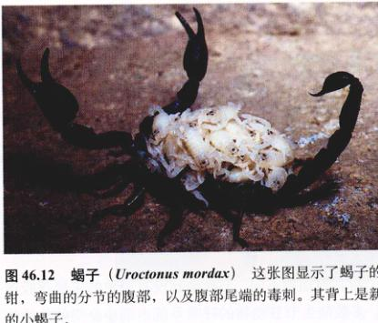
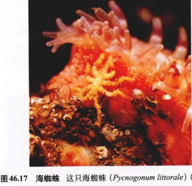
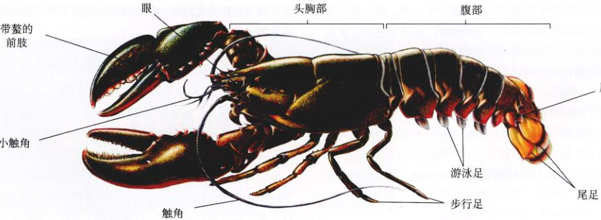
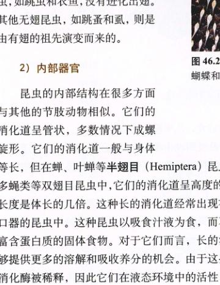
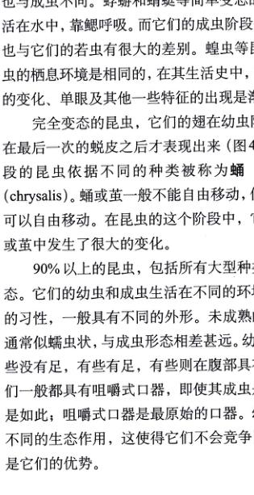

图 46.1 一种节肢动物 胡蜂 (Polistes) 是一种常见的昆虫，为节肢动物的代表种。
环节动物身体的分节标志着有体腔动物躯体结构的第一次重大革新，而另一次更加重大的革新则是由环节动物进化而来的新的一门——节肢动物门的具关节的附肢的出现。节肢动物的躯体分节与环节动物相似，但是这种分节只在幼体时期出现，而在成年后体节则愈合为特定的功能单位。在节肢动物中，如图 46.1 中的胡蜂，具关节的附肢包括足、触角和排列复杂的口器。附肢排列带来的灵活性与柔韧性使得节肢动物成为进化最成功的动物类群之一。
第一个环节动物进化成功时，动物结构中的很多重要变革已经出现：分化为三类组织（内胚层、中胚层、外胚层），两侧对称，具有体腔，身体分节。伴随着节肢动物的进化，又出现了两个重要的变革：具关节的附肢和外骨骼的发育。具关节的附肢和外骨骼使得节肢动物成为种类最多的一门。
节肢动物 (Arthropod) 的名称来自于希腊语中“分节的” (arthros) 和“足” (podes)。所有的节肢动物都具有分节的附肢。随着进化，附肢的数量逐渐减少。附肢能够分化成触角、形态各异的口器和足。有些附肢，如某些昆虫的翅，和其他的附肢不是同源的；昆虫的翅是单独进化来的。
设想自己没有了臀部、膝、踝、肩、肘、腕和指节，你就会获得有关具关节附肢的重要性的感性认识。失去了具关节的附肢，你就不能行走或抓住任何物体。节肢动物运用具关节的附肢进行各种功能，足用来行走，触角用来感觉环境，口器用来进食。
图 46.2 节肢动物是成功的类群 约三分之二的已知动物是节肢动物。约 80% 的节肢动物是昆虫，约一半的已知昆虫是甲虫。
节肢动物身体构造的第二个重要革新是具有由几丁质和蛋白质组成的坚固的外骨骼 (exoskeleton)。在任何动物当中，骨骼的作用就是为肌肉提供附着的部位。在节肢动物中，肌肉附着在外骨骼的内表面。外骨骼同时还起到保护个体免受捕食者的侵袭和防止水分流失的作用。几丁质在化学成分上与作为植物结构主要成分的纤维素类似，并且与纤维素具有相似的柔韧性。由几丁质和蛋白质共同形成的外骨骼坚硬，具有韧性，为肌肉提供了合适的附着位置。甲壳类的动物外骨骼含有沉积的钙盐，虽然韧性稍差，但是更加坚硬。但是，外骨骼的结构有一个局限。为了承受肌肉的拉力，大型昆虫的外骨骼需要比小型昆虫的更厚。这正是为什么没有像鸟一样大的甲虫，或是像牛一样大的蟹——外骨骼太厚重会导致动物不能移动。因为这种体积大小的限制是与生俱来的，所以没有大型的节肢动物，很少有比你的大拇指更大的节肢动物。
节肢动物，尤其是最大的一纲——昆虫纲是动物界中的最成功者。节肢动物门的成员超过 100 万种，占地球上已知动物种类的三分之二（图 46.2）。基于热带森林中昆虫的种类和数量，一位科学家最近估计，仅仅昆虫纲就有 3000 万种。有一个人就有两亿的昆虫！昆虫和其他节肢动物（图 46.3）充斥着这个星球的每一个角落，但它们更多地分布在陆地上，和植物与脊椎动物生活在一起。
节肢动物门的主要成员是小型动物，其长度大都在几毫米，成体的长度在 80 mm（一些寄生的螨虫）到 3.6 m（在日本海发现的巨大的蟹）不等。
节肢动物，尤其是昆虫，具有很重要的经济价值，并且影响着人类生活的各个方面。它们和人类竞争每一种食物，它们在农作物的传粉中起着至关重要的作用，但也会在丰收前后造成几十亿美元的农作物损失。它们是陆地生态系统中最重要的食草动物，同时也是重要的食物来源。事实上，每一种植物都有一种或多种昆虫以它为食。昆虫传播的疾病每年都会造成巨大的财政损失，并且会影响每一种驯养的动物与植物，甚至人类。
图 46.3 具关节的附肢和外骨骼的进化 昆虫和其他的节肢动物具有体腔、分节的躯干和附肢。昆虫身体头、胸、腹部的每一部分都由一定数量的体节在进化过程中愈合而成。所有的节肢动物都具有坚硬的几丁质外骨骼。昆虫进化出了翅，使得它们能够快速的飞行。
节肢动物作为最古老的动物之一，最早出现在距今 6 亿年前的前寒武纪。无论大小，所有的节肢动物都具有共同的遗传特征：身体分节和有关节的附肢。这种强有力的组合产生了新的进化形式。节肢动物是动物界中种类最多的门，比其他所有动物种类的总和还多，其中最多的是昆虫。
分类学家长时间持有一种观点，认为环节动物与节肢动物这两个身体分节的门具有很近的亲缘关系。在 Burgess Shale 发现的有爪动物门 (Onychophora) 的栉蚕和其他寒武纪的化石表明，环节动物与节肢动物有许多相似之处。近期分子水平的研究也证实了这种关系。
传统的分类方法根据形态学特征将节肢动物门分为三个亚门。
(1) 三叶虫 (Trilobite)：已灭绝。2.5 亿年前，三叶虫在海洋中很常见，它是一种具有高分辨率的眼睛的动物。
(2) 有螯动物 (Chelicerates)：蜘蛛、鲎、海蜘蛛。这些节肢动物没有颚，它们最前端的附肢是口器，称为螯肢 (chelicerae)（图 46.4a），其功能是取食，一般具有螯爪或螯钳。
(3) 有颚动物 (Mandibulate)：甲壳类、昆虫、蜈蚣、马陆。这些节肢动物具有尖锐的大颚 (mandible)（图 46.4b）。有颚动物最前端的附肢，是一个或多对起感觉作用的触角，其次是大颚。在所有的有颚动物当中，昆虫从甲壳类中分了出去，而与多足类（蜈蚣和马陆）归为一类，称为有气管类动物 (Tracheata)。这种依然广泛使用的方法的起源，可以追溯到著名的比较生物学家罗伯特·施劳德格拉斯 (Robert Snodgrass) 在 19 世纪 30 年代所著的分类学著作。他指出，昆虫、蜈蚣和马陆被统一看上去强有力的共同属性统一起来。这些特征是：①气管呼吸系统。气管很小，分支的气管将氧气从外骨骼的开口处运送到身体的每一个细胞。②用马氏管排泄。马氏管 (Malpighian tubule) 是从消化道分出的纤细的凸出物，它收集并过滤体液，将废物排至后肠。③单叉型 (uniramous) 的足。所有有气管类动物的附肢都是单叉型，而甲壳类动物的附肢都是双叉型 (biramous)（图 46.5），虽然有些双叉型附肢在进化过程中又退化为单叉型。相反，昆虫的大颚和其他附肢都是单叉型的。
图 46.4 有螯动物和有颚动物 有螯动物，如蜘蛛 (a)，螯肢是身体最前端的 1 对附肢。相反，有颚动物，如蚂蚁 (b)，最前端的附肢是触角，其后是大颚。
图 46.5 有颚动物的附肢 甲壳类（小龙虾）双叉型的足和昆虫单叉型的足。
近期的研究对传统分类提出了质疑。问题在于，用来定义有气管类动物的形态学分类特征，并没有设想的那么有说服力。分类学家通常认为，像分叉型附肢这种在进化过程中保留下来的基本特征，适合作为分类的依据。
但是，现代分子生物学告诉我们，这种假设并不正确。例如，足的分叉非由一个单独的基因所控制。节肢动物附肢的类型是由同源框 (Hox) 家族基因共同调控的，已在第17章详细介绍。近期发现，其中的一个基因——Distalless，能够启动昆虫不可分叉型附肢和甲壳类分叉型附肢的发育。在许多其他门的动物中也发现了相同的 Distalless 基因，其中包括脊椎动物。
近几年，随着大量的形态学和分子生物学资料的积累，许多分类学家提出了有关节肢动物的新的分类方法。其中最具革命性的论点是由哥伦比亚大学的理查德·布鲁斯卡 (Richard Brusca) 提出的。他认为，甲壳类是节肢动物中最原始的类群，昆虫是它们的近亲（图 46.6）。
(1) 形态学证据：有关节肢动物系统发生的最新研究报道于 1998 年。该研究基于 100 多幅中枢神经系统的解剖学图像得出结论，昆虫与甲壳类动物的亲缘关系较其他的节肢动物类群更近。因为它们都具有独特的神经元以及其他共同的特征。
(2) 分子证据：基于 18S rRNA 序列、18S rRNA 基因、延长因子 EF-1a 以及 RNA 聚合酶 II 基因等分子系统发生学的研究表明，昆虫是甲壳类动物的近亲，而不是多足类的近亲。研究还表明，昆虫是由甲壳纲演化而来的。这些结论必然会与长达 150 年的基于形态学的结论产生激烈的冲突。
图 46.6 节肢动物的系统发生史 许多的证据支持了昆虫和现代甲壳类动物是近亲的假说，认为它们是由前寒武纪共同的甲壳类祖先进化而来的。这意味着昆虫可以被视为“飞行的甲壳类”。传统的由昆虫、蜈蚣和马陆共同组成的有气管类动物事实上是一个多源的类群。
节肢动物的躯干像环节动物一样分节，某些节肢动物明显与环节动物有亲缘关系。节肢动物有些钢的身体具有很多体节，而其他类群的体节发生愈合，形成具有一定功能的体区 (tagma)，例如，昆虫的头部和胸部（图 46.7）。这种愈合的过程称为体区化 (tagmatization)，在节肢动物进化过程中具有重要的作用。大多数的节肢动物在幼虫发育期能够辨认出原始的体节。所有的节肢动物都具有明显可辨的头部，有时头部与胸部愈合，形成的新的体区称为头胸部 (cephalothorax)。
图 46.7 随着节肢动物的进化，体节越来越少 (a) 蝎子和 (b) 蜜蜂是具有不同体节数的节肢动物。
所有的节肢动物的身体外部都被由几丁质组成的外骨骼或角质层。外骨骼上附有肌肉。这些外骨骼是由表皮分泌并与之愈合而成的。外骨骼在某些位置保持着很好的柔韧性，可以弯曲，带动附肢运动。外骨骼可以减少节肢动物体内水分流失，也可以防止食肉动物和寄生虫的伤害。
蜕皮 节肢动物定期蜕下外表皮角质层，这一过程称作蜕皮 (ecdysis or molting)。当节肢动物的身体超过外骨骼时，它们会在外骨骼之下形成一层新的外骨骼。这一过程由激素调控。当新的外骨骼长成时，它将通过液体与旧的外骨骼分离。这种液体能够溶解旧的外骨骼中的几丁质、蛋白质以及碳酸钙。随着液体越来越多，直到原有的外骨骼最终裂开（一般从背部裂开），并且蜕去。从里中出来的节肢动物被新的柔软的外骨骼所包围。节肢动物自身充分膨胀，直至达到新的体形。流经全身的血液循环帮助动物膨胀，许多昆虫和蜘蛛还吸入空气作为辅助。由于外骨骼还很软，所以这时的动物尤其易受攻击。节肢动物这时一般都藏在石块、树叶或树枝的下面。
许多节肢动物的另一个重要结构就是复眼 (compound eye)（图 46.8(a)）。复眼一般由上千个独立的视觉单位组成，这些单位称为小眼 (ommatidia)。每一个小眼都相当于一个透镜，与一个视网膜细胞 (retinal cell) 组成的联合体以及感光的中心核——感杆束 (rhabdom) 相连。昆虫的复眼分为两大类：并列眼 (apposition eye) 和重叠像眼 (superposition eye)。
蜜蜂、蝴蝶和其他白天活动的昆虫都具有并列像眼。其中每一个小眼都被色素细胞所隔离，使得光线不会从一个小眼进入另一个小眼，保证它们都独立工作。蛾和其他夜间活动的昆虫都具有重叠像眼。这种眼的设计使得光线能够最大限度地进入每一个小眼。在夜间，色素细胞中的色素集中在细胞的顶端，以减少小眼对光线的吸收。在白天，色素细胞中的色素使节肢动物的眼具有颜色，但是色素对于视觉并不起什么重要作用。视觉色素位于每一个小眼中心的感杆束。每一个小眼所成的像在节肢动物的大脑中集合起来，形成外面世界的影像。
单眼 (simple eyes or ocelli)，具有单个透镜。有些昆虫具有单眼，而更多的情况则是单眼与复眼同时出现（图 46.8(b)）。单眼的功能是分辨黑暗环境中的光线。一些飞行昆虫，如蝗虫和蜻蜓的单眼，作为一个地平探测器，帮助它们在飞行中获得稳定的视觉影像。
图 46.8 复眼 (a) 昆虫复眼的结构十分复杂。(b) 盗虻（双翅目）的复眼之间有三个单眼。
在节肢动物的进化过程中，体腔极度退化，仅残留生殖器官和一些腺体的内腔。节肢动物外骨骼的外表面和器官的内表面上都没有纤毛。和环节动物相似，节肢动物具有从口一直延伸至肛门的管状的消化道。下面，我们将分别讨论节肢动物的循环系统、神经系统、呼吸系统和排泄系统（图 46.9）。
节肢动物的循环系统是开放式的；它们的血液在体腔内的器官之间流动，而不是通过封闭的血管。昆虫循环系统的主要组成部分是一条纵向的血管，称为心脏。这条血管在近胸部和腹部的背侧表面延伸。当心脏收缩时，血液流入昆虫的头部区域。
当昆虫的心脏舒张时，血液通过许多瓣膜流回心脏。这些瓣膜位于心脏的后部，使得血液只向前流动。因此，昆虫头部和前部的血液逐渐从组织间流向躯体后部，随后通过单向的瓣膜进入心脏。当昆虫奔跑、飞行或做其他运动时，血流会加快。此时血液有效地将养分带入组织，并将废物带走。
节肢动物神经系统的主要组成部分是沿腹面延伸的、为分节排列的两条中枢神经链。在头部有3对愈合的背神经节与大脑相连。但是，节肢动物的许多活动都是由腹神经节控制的。因此，它们可以在没有大脑的情况下完成进食、运动和交配等多种生理功能。对节肢动物的多种运动而言，其大脑似乎只是一个控制点，或是抑制者，而不是像脊椎动物那样是主导者。
图 46.9 蚱蜢（直翅目） 上图显示了蚱蜢的主要结构，这也代表了节肢动物中种类最多的一类群——昆虫的主要结构。(a) 外部解剖图。(b) 内部解剖图。
图 46.10 气管和微气管 气管和微气管与外部通过特化的气门相连，并且将氧气送往陆生昆虫身体的各个部位。(a) 蚱蜢的气管系统。(b) 蟑螂的气管系统的一部分。
与单肢动物亚门 (Subphylum Uniramia) 的其他陆生动物一样，昆虫依靠呼吸系统将氧气带到全身各处，而不是像脊椎动物中，氧气被携带在封闭循环系统的血液中运送至全身各处，这种方式要比节肢动物高效得多。在节肢动物中，身体的各部分都必须靠呼吸管道以便获得氧气。再加上厚重的几丁质外骨骼，节肢动物的体形与脊椎动物相比就受到了严格的限制。
与其他动物不同，节肢动物没有单独的主要呼吸器官。多数陆生节肢动物的呼吸系统由细小分支的角质化气管 (tracheae) 组成（图 46.10），这些气管最终分支为微气管 (tracheole)。管状的气管将氧向身体各处传送，微气管与细胞直接接触，氧气通过扩散直接穿过细胞膜。空气通过外骨骼上特化的气门 (spiracle) 进入气管，气门由瓣膜控制开闭。关闭气门可以防止水分散失，这种功能为节肢动物登陆提供了极大的方便。许多昆虫，尤其是体形较大的昆虫依靠肌肉收缩帮助增加进出的空气流量。在其他节肢动物当中，气体的流动基本上是一个被动的过程。
许多蜘蛛和一些其他有螯动物具有独特的呼吸器官——书肺 (book lung)，体表凹陷形成的空腔内具有一系列书页状突起。通过肌肉的收缩将气体吸入或排出小室。书肺可与气管同时存在，或者取代气管。海产有螯类——鲎，具有书鳃 (book gill)，这是一种类似于书肺的水生结构。气管、书肺和书鳃都是节肢动物所特有的结构。有爪动物门有气管，甲壳类动物无此结构，但是具有鳃。
虽然不同种的节肢动物具有不同的排泄系统，但这里着重讨论的是陆生单肢动物独有的马氏管 (Malpighian tubule) 排泄系统。马氏管位于中肠和后肠交界处，是肠壁向外突出的细长的管子（图 46.3）。马氏管浸浴在血液中，透过管壁与血液进行物质交换。当液体流经马氏管进入后肠时，其中的含氮废物沉淀为浓缩的尿酸或鸟嘌呤而被排出体外。液体中的大部分水分和盐被后肠和直肠吸收，回到节肢动物体内。马氏管排泄系统是一种高效的保持水分的装置，也是节肢动物登陆的另一种重要适应。
有螯动物 (Chelicerate) 是节肢动物独特的一个进化支，其最前端的一对附肢特化为螯肢，起着螯爪 (fang) 或螯钳 (pincer) 的作用。有螯动物亚门中最大的纲是陆生的蛛形纲 (Arachnida)，已知约 57 000 种。其中包括蜘蛛、蜱、螨、蝎子和盲蛛。蛛形纲动物 (Arachnid) 都具有 1 对螯肢、1 对触肢和 4 对步足。螯肢是最前端的附肢，一般由粗壮的基部和可动的与毒腺相连的螯爪组成。
接下来的一对附肢是触肢 (pedipalp)，像步足但比步足少一节，并非用来行走。雄性蜘蛛的触肢特化成交配器。而蝎子的触肢则是一大钳子。
大多数的蛛形纲动物都是肉食动物，而其中的一个例外是螨，螨主要是草食性的。大多数蛛形纲动物只能吃液化的食物。它们将酶分泌到猎物体内，使其液化，再将液化被消化的汁液通过具有泵功能的咽吸入体内。蛛形纲动物主要是陆生的，4000 多种螨和一种蜘蛛生活在淡水中，少数螨生活在海水中。蛛形纲动物依靠气管、书肺，或者二者共同工作完成呼吸。
盲蛛目 (Opiliones) 是蛛形纲的成员之一。根据椭圆形态的身体和细长的足很容易将这一目的成员辨认出来（图 46.11）。它们主要依靠成对的原始气管呼吸，并且采用蛛形纲动物不常用的交配方式——直接交配。雄性具有雄性生殖器，而雌性具有产卵器 (ovipositor)，可以将卵产在裂缝中。多数的盲蛛以昆虫和其他蛛形纲动物为食，但有些也以植物的汁液以及腐食为食。本科约有 5000 种。
图 46.11 盲蛛
蝎目 (Scorpiones) 的蝎子亦属于蛛形纲，它的触肢变成了一对大钳子。蝎子用这对钳子夹住并撕碎猎物（图 46.12）。蝎子的毒刺主要用来刺晕它们的猎物，一般不用作自卫，毒刺位于腹部的最后一节。当蝎子移动时，它的腹部向上翘起向前弯曲。蝎子这种分节的腹部是它所独有的，而多数有螯动物的腹部一般都会愈合为一体。
蝎子是陆生节肢动物中最古老的一类，它们早在 4.25 亿年前的志留纪就出现了。蝎目的成员一般在 1~18 cm 之间。蝎子大约有 1200 种，全部为陆生，它们遍及世界各地。蝎子在热带、亚热带和沙漠地区最为常见。蝎子一次能产 1~95 个小蝎子。
图 46.12 蝎子 (Uroctonus mordax) 这张图显示了蝎子的螯钳，弯曲的分节的腹部，以及腹部尾端的毒刺。其背上是新生的小蝎子。
蜘蛛目 (Araneae) 已知约有 35 000 种。这些动物在陆地生态系统中起着重要的作用。它们是昆虫和其他一些小型动物的捕食者。有些蜘蛛直接猎取食物，有些则使用各式各样的网捕食。蜘蛛由其腹部末端的纺织器中分泌的液体蛋白形成。蜘蛛这种织网的习性是独一无二的。有些蜘蛛可以借助自己织成的小网在微风中漂至新的栖息地。
许多蜘蛛，如我们熟悉的狼蛛和特兰图拉毒蛛 (tarantula)，并不织网，它们主动捕食猎物。还有一些蜘蛛，被称作活板门蜘蛛 (trap-door spider)，它们建造一个丝织的、有盖的洞，捕捉路过的猎物。有一种生活在淡水中的水蛛 (Argyroneta aquatica)，大部分时间都在水下的钟形气泡内生活，而用来在水下行走和游泳的步足则不被气泡包围。还有一些其他种类的蜘蛛能在水面上自由地行走。
蜘蛛的毒腺位于螯肢内，螯肢尖，用于咬吐、麻醉猎物。蜘蛛目的一些种类，如黑寡妇和褐色隐腹蛛（图 46.13）的毒液能伤害人和其他大型哺乳动物。
蜱螨目 (Acari) 是蛛形纲中最大的一目。虽然命名的物种仅有 30 000 种，但科学家估计现存物种至少有上百万种。
多数螨 (mite) 很小，不足一毫米，但不同种类的成体螨的体长从 100 nm ~ 2 cm 不等。多数螨的头胸部和腹部愈合成一个不分节的椭圆形躯干。它们或通过气管呼吸，或直接通过外骨骼呼吸。许多螨一生要经历许多特有的生理阶段。由不能活动的 8 足前幼虫 (prelarva) 变为一个有活动能力的 6 足幼虫，随后连续经历三个 8 足的阶段，最后变为雄性或雌性成虫。
螨和蜱 (tick) 在结构和习性上有很大的差异。几乎在任何陆地、淡水和海洋环境中都有它们的踪迹，它们以真菌、植物和动物为食。它们既是肉食动物，又能寄生在脊椎动物和无脊椎动物的体内和体外寄生。
许多螨给人类带来了恼人的疾病。螨生活在人的前额和鼻子的毛囊和耵聍腺中，但是并没有症状。
蜱是吸血的体外寄生虫 (ectoparasite)，它们寄生在寄主的表面（图 46.14）。它们比大多数的螨要大，当它们吸食人或动物的血液时会引起不适。蜱能够传播许多疾病，包括病毒、细菌和原生动物引起的疾病。斑疹热 (spotted fever) 就是由蜱携带的细菌所引起的。莱姆病 (Lyme disease) 也是由蜱传播的螺旋菌引起的。得克萨斯热 (Taxas fever) 是由蜱携带的原生动物引起的牲畜疾病。
图 46.13 两种常见的毒蜘蛛 (a) 黑寡妇 (Latrodectus mactans)。(b) 褐色隐腹蛛 (Loxosceles reclusa)。这两种蜘蛛都是北美温带和亚热带常见蜘蛛，但很少攻击人。
图 46.14 扁虱（蜱螨目） 扁虱在秘鲁皱的皮毛中。许多扁虱向人和其它脊椎动物传播疾病。
图 46.15 鲎 (Limulus) 五月初，鲎在新泽西特拉华湾的岸边交配。
图 46.16 鲎的腹面视图 这张图显示了这种古老生物的主要结构。
有螯动物中的第二个纲是肢口纲 (Merostomata)。肢口纲有 3 个属：其中一个属——鲎 (Limulus)（图 46.15），在北美东海岸很常见。另外 2 个属分布在亚洲热带地区。鲎是一类古老的生物，现存的鲎与 2.2 亿年前三叠纪的鲎化石几乎一模一样。这个纲的另一个成员，现已灭绝的板足鲎 (eurypteran) 生活在 4 亿年前。依据鲎的幼虫形态，人们推测鲎是由三叶虫进化而来的。鲎的体长达 60 cm，通常需要 9~12 年才能发育成熟，寿命一般在 14~19 年。鲎生活在深海，但是每年的春天，它们都会迁徙到沿海的浅滩，在月光下借着潮汐爬上海滩进行交配。
鲎在夜间捕食，主要捕食软体动物和环节动物。它们利用板状的腹足游泳，或用 4 对足行走。步足连同螯肢和触肢皆被壳保护（图 46.16）。
有螯动物中的第三纲是海蜘蛛纲 (Pycnogonida)，包括 1000 多种动物。这些动物不易观察到，因为它们的体形很小，只有 1~3 cm，而且很不显眼。这种动物在全世界的海域都能见到，但是在南部和北部偏多。成年的海蜘蛛为体表寄生虫，或以海葵等动物为食（图 46.17）。
海蜘蛛的口中有吸食用的吸管，它们的腹部很小，所以看上去只有头胸部，并且头与部没有明显的界限。海蜘蛛一般有 4 对足，少数一些种类有 5 对或 6 对。雌性海蜘蛛的足上携带者卵，直到孵化才脱落下来，这样为卵提供了很好的保护。海蜘蛛没有排泄系统和呼吸系统，废物和氧气可通过直接扩散进出细胞，从而实现排泄和呼吸的功能。海蜘蛛与其他两类有螯动物并没有很近的亲缘关系。
图 46.17 海蜘蛛 这只海蜘蛛 (Pycnogonum littorale)（黄色的动物）正在海葵上爬动。
甲壳类动物 (crustacean) 是一大类水生生物，约 35 000 种，包括蟹、虾、龙虾、螯虾、藤壶、水蚤和其他相近种（表 46.1）。多数甲壳类动物具有 2 对触角、3 对咀嚼附肢以及多对足。除了有些种类的第一对触角以外，所有的甲壳类的附肢都是双叉型的。有些甲壳类动物的附肢是单叉型的，附肢的另一分支在进化过程中消失了。所有的甲壳类动物都要经历无节幼虫 (nauplius) 阶段，说明这些不同的动物具有共同的祖先（图 46.18）。具有三对附肢的无节幼虫要经历多个阶段最终才能变为成虫。有些种类的无节幼虫阶段是在卵中度过的，所以，它们一孵化出来就直接成为成虫。
甲壳类与昆虫不同，但与蜈蚣和马陆相似，因为它们的腹部和胸部都长有附肢。它们是唯一具有两对触角的节肢动物。它们的大颚很可能是起源于进化中继承担咀嚼食物功能的一对附肢，这一过程显然是有颚动物的共同祖先单独发生的。许多甲壳类动物具有复眼，另外，它们的体表还具有精细的触毛。较大的甲壳类动物在足的基部还具有羽状的鳃。较小的种类则通过全身进行气体交换。多数的甲壳类动物雌雄异体，并且具有多种不同的交配方式。有些种类将卵随身携带，或是直接带在身上，或是在卵鞘中，直到它们孵化。
| 亚 门 | 特 征 | 成 员 |
|---|---|---|
| 有螯动物亚门 | 口器为螯肢 | 有螯动物的代表有蜘蛛、鲎、螨 |
| 甲壳动物亚门 | 口器为大颚；双叉型附肢 | 甲壳动物的代表有龙虾、蟹、虾等足类动物、藤壶 |
| 单肢动物亚门 | 口器为大颚；单叉型附肢 | 蜈蚣（百足虫） 马陆（千足虫） 昆虫 |
图 46.18 虽然甲壳动物各不相同，但它们具有相似的幼虫 甲壳类动物的所有无节幼虫具有相似的结构。
图 46.19 十足目甲壳动物 美洲螯龙虾 (Homarus americanus)，图中标明了它的主要结构。
图 46.20 淡水甲壳类动物 桡足虫与它携带的卵。桡足动物（桡足目）是淡水和海水中生活数量众多的甲壳类动物。它们中的大多数只有几毫米长。桡足动物是浮游生物的重要组成部分。
图 46.21 鹅颈状的蔓足类 茗荷儿 (Lepas anatifera) 正在进食。这些是有柄的蔓足类，有很多的种类没有柄。
大部分大型的海洋甲壳动物，如虾、龙虾和蟹，以及它们淡水中的亲戚——螯虾都属于十足目甲壳动物 (decapod crustacean)（图 46.19）。这类动物的外骨骼一般被其中所含的碳酸钙所硬化。它们的体节融合成头胸部，被背板覆盖。背板又称为头胸甲 (carapace)，由头部生出。十足目动物有力的钳子一般用来捕食，砸开软体动物的壳。
龙虾和螯虾的腹部腹侧的附肢称为游泳肢 (swimmeret)，用来游泳和繁殖。另外，扁平的尾肢 (uropod) 在腹部尾端组合成“浆”。这些动物一般还有尾节 (telson) 或尾刺。摆动腹部，它们可以快速而强有力地推水前进。蟹与龙虾和螯虾不同，它们的头胸甲更大、更厚，腹部卷藏在头胸甲的下面。
虽然多数甲壳类动物是生活在海洋中的，但是也有许多种是生活在淡水中，少数成为陆生种。例如甲壳动物中种类较多的等足目 (Isopoda)，其陆生种类代表为鼠妇。这个目的动物约有 4500 种，其中一半是陆生的，并且生活在潮湿的地方，至少是季节性潮湿的地方。端足目 (Amphipoda) 的沙蚤是另一类常见的甲壳类动物，多属于潮间带种类。
许多微小的甲壳动物和较大的甲壳动物的幼虫共同组成了浮游生物的一部分。其中桡足目 (Copepoda) 的动物尤为重要（图 46.20），它们是地球上最丰富的多细胞生物。
蔓足目 (Cirripedia) 的藤壶 (barnacle)（图 46.21）是一类固着的甲壳类动物。藤壶具有能够自由游泳的幼虫，它们用头附着在木桩、石头或其他浸在水中的物体上，用它们羽状的足将食物送入口中。含钙的外壳保护着藤壶的身体，而这些外壳与它们的基部紧密且坚固地相连。虽然大多数的甲壳类都是雌雄异体，但是藤壶是雌雄同体的。尽管如此，藤壶一般是异体受精。
马陆、蜈蚣和昆虫属于三个不同的纲，都属于单叉型有颚动物。它们利用气管呼吸和马氏管排泄，它们都利用头附着在木桩、石头或其他浸在水中的物体上，很可能是由胚胎发育很类似的寡毛纲的动物演化而来。
唇足纲 (Chilopoda) 的蜈蚣和倍足纲 (Diplopoda) 的马陆身体都由头区域及很多相似的体节组成，几乎每一节上都有成对的足。成年的蜈蚣一般有 15 对或更多的足，而马陆的足则有 30 对以上的足。蜈蚣的每一个体节上只有 1 对足（图 46.22），而马陆则有 2 对足（图 46.23）。马陆的每一个体节都是一个体区，是由于它的祖先在进化过程中两个体节愈合而成的。这就解释了为什么马陆的每一个体节的足的个数是蜈蚣的两倍。
蜈蚣和马陆都是靠直接传递精液体内受精的。雌雄异体，所有种类都产卵。刚孵化出的马陆只有 3 对足；经过多个成长阶段，体节和足的数量增加，马陆逐渐成熟，但是外形没有明显变化。
已知的蜈蚣有 2500 种左右，它们都是肉食动物，主要以昆虫为食。躯干第一节的附肢特化成一对毒牙。毒液对于人来说很毒的，大多数情况下，被蜈蚣咬伤是很疼的，甚至会有生命危险。
相比之下，多数马陆是草食性的，主要以腐烂的植物为食。只有很少一部分马陆是肉食的。很多马陆能将身体卷缩成钱币状或球体，因为它们每一体节的背部要比腹部长的多。现已命名的马陆约有 1 万种，但是据估计现今仍存活的不已足六分之一。多数马陆的每一个体节上都有一对复杂的腺体，能够分泌有难闻气味的液体。这些液体从身体两侧流出，起到自卫的作用。由于这种分泌物中含有多种多样的化合物，并且它们的保护效力也不尽相同，因此，研究不同种类马陆的分泌物的化学成分已成为一个有趣的课题。还有一些种类能够从头部顶端分泌氰化氢气体。马陆一般生活在潮湿的、避光的地方，如树叶下面，腐烂的木桩里，树皮或石头下面，或是土中。
图 46.22 蜈蚣 蜈蚣 (Scolopendra) 是活跃的肉食动物。
图 46.23 马陆 草食性的马陆 (Sigmoria)。
昆虫是迄今为止地球上种类最多的生物，无论是种类还是数量。昆虫生活在地球上每一个你能想象得到的环境中，陆地上、淡水中、有的甚至生活在海水中。已命名的动物中，有一半是昆虫。实际上昆虫所占的比例要比一半还要多，因为还有上百万种的昆虫没有被发现、分类和命名。美国和加拿大记录了约 9 万种，实际上这个地区的种类至少应该达到 12.5 万种。据估计，一公顷的热带森林地中生活着 4.1 万种昆虫，许多市郊的花园中就有 1500 或是更多种类的昆虫。据估计，每时每刻都有 1018 只昆虫生活在这个地球上。图 46.24 和表 46.2 中所列出的形形色色的昆虫只是其中极少的一部分。
昆虫主要是陆生群体，而且大部分水生的昆虫也有陆生的祖先。多数昆虫相对较小，体长或翅展在 0.1 mm ~ 30 cm 之间。昆虫身体分为三个部分：头部、胸部和腹部。胸部生有 3 对足，1 对触角。另外，有些种类具有 1 对或 2 对翅。昆虫的口器具有相同的基本结构，但是根据食性的不同特化为不同的类型（图 46.25）。多数昆虫具有复眼，有些也有单眼。
昆虫的胸部分为三部分，每一部分有 1 对足。有些种类的幼虫没有足，例如多数双翅目 (Diptera) 的昆虫（图 46.26）。如果具有 2 对翅，它们分别着生在中胸和后胸。如果只有 1 对翅，它们一般着生在中胸。胸部一般充满了肌肉，带动足和翅运动。
昆虫的翅是从体壁长出的囊状物。成虫的翅除了翅脉以外都是实心的。昆虫的翅与其他附肢不是同源器官。一般的昆虫都有 2 对翅，但有些种类，如苍蝇，第 2 对翅在进化的过程中退化为 1 对平衡棒。大多数昆虫在休息时将翅收在它的腹部上方，但有些种类，如蜻蜓和豆娘（蜻蜓目），翅始终保持直立或向外伸展状态。
图 46.25 三种昆虫的口器 (a) 蚊子的刺吸式口器。(b) 苜蓿粉蝶吸食花蜜的虹吸式口器。(c) 家蝇的舐吸式口器。
图 46.26 蚊子 (Culex pipens) 的幼虫 在水中生长的蚊子的幼虫是很活跃的，它们通过伸出水面的管呼吸。在水的表面覆盖一薄层油可以将它们溺死。
图 46.24 形形色色的昆虫 (a) 月形天蚕蛾 (Actias luna)。月形天蚕蛾及其亲缘种是最漂亮的昆虫之一（鳞翅目）。(b) 蝇 (Ptecticus trivittatus)（双翅目）。(c) 棉铃象 (Anthonomus grandis)。象鼻虫是甲虫中的一大类（鞘翅目）。(d) 刺状叶蝉 (Umbonica crassicornis)（半翅目）。(e) 交尾的蝗虫（直翅目）。(f) 白蚁 (Macrotermes bellicosus)（等翅目）。大的香肠形状的个体是蚁后，专门负责产卵，大多蚁后几周围的小型个体是工蚁，稍大一些的个体寿命很短，是繁殖雄蚁。
甲虫等昆虫的前翅坚硬，它盖住后翅，一般在飞行时打开。直翅目昆虫（如蝗虫和蟋蟀）坚硬的前翅同时起到保护作用。昆虫的翅由几丁质和蛋白质组成，管状的起加固作用的翅脉也是由几丁质和蛋白质组成。蛾和蝴蝶的翅上覆盖着颜色鲜艳的鳞片（图 46.27）。一些昆虫，如跳蚤和虱，则是是由有翅的祖先演变而来的。
昆虫的内部结构在很多方面与其他节肢动物相似。它们的消化道呈管状，多数情况下成螺旋形。它们的消化道一般与身体等长，但在叶蝉、叶蝉等半翅目 (Hemiptera) 昆虫以及许多蝽类等双翅目昆虫中，它们的消化道呈高度出现的螺旋形，长度是体长的几倍。这种长的消化道适应于吸收植物汁液的口器。这种昆虫以吸食汁液为食，而不是食用富含蛋白质的固体食物。对于它们而言，长的消化道能够提供更多的溶解和吸收养分的机会。由于这些昆虫的消化酶被稀释，因此它们在液态环境中的活性比固态环境中的低。当食物通过这种长的消化道时，它赋予了酶更长的工作时间。
昆虫消化道的前端和后端皆角质化。消化作用主要在胃或中肠中进行，而排泄则在马氏管中进行。消化酶主要由中肠的细胞分泌，虽然也有部分来源于口中的唾液腺。
昆虫的气管在身体中延伸，穿过不同的组织。在许多有翅的昆虫当中，气管在身体的多处膨胀，形成气囊。这些气囊被肌肉所包围，形成风箱系统，使大量空气进入到气管系统。气门成对排列在胸腔和腹腔的两侧，侧各有 10 个。在多数昆虫中，气门可以通过肌肉控制开闭。气门的关闭对于减缓水分流失很重要。一些寄生和水生的昆虫，它们的气门始终是闭合的。它们的呼吸就在表皮以下，气体可以通过扩散实现交换。
脂肪体 (fat body) 位于昆虫体腔的一群细胞中。相对昆虫的体积而言，这个结构相当大，起着食物储存库的作用，同时还具有脊椎动物肝脏的某些作用。它们在未成年的昆虫中更为显著，当昆虫变态完成后，脂肪体将会消失。不进食的成虫依然保留有脂肪体，并且依靠其中储存的食物生存，但是这些昆虫的寿命一般很短。
图 46.27 蝴蝶翅上的鳞片 这些鳞片组成了蝴蝶和蛾翅上的各形色彩图案。
除了眼以外，昆虫还具有很多其他的感官。其中包括广泛分布于昆虫体表的感觉毛 (sensory hair)，这些感觉毛与神经细胞相连，对于机械刺激与化学刺激很敏感。在昆虫最易与其他物体接触的部分——触角和足上，感觉毛尤为丰富。
声音对于昆虫尤为重要。蝗虫、蟋蟀、蝉和蛾等昆虫通过鼓膜器 (tympanal organ)（即听器）探测声音。这些器官具有成对的结构，一层薄的鼓膜 (tympanum) 与气管气囊相连。在许多其他种类的昆虫中，声波则依靠感觉毛来探测。雄性蚊子通过触角上上千根的感觉毛探测雌性蚊子翅震动的声音。
声音的探测对于昆虫来说很重要，不仅有利用自我保护，而且也有利于相互交流。许多昆虫通过发出声音进行交流，这些声音多数微弱而尖锐的，所以这些声音人类是听不见的。只有一小部分昆虫，尤其是蝗虫、蟋蟀和蝉，它们发出的声音人类可以听到。雄性的蟋蟀和长角蝗虫能够通过前翅相互摩擦而发出声音，而短角蝗虫则是通过后足与翅上的特定部位相互摩擦发出声音。雄蝉是通过震动腹部前端气囊的膜发出声音。
除了声音之外，几乎所有的昆虫还通过信息素 (pheromone) 传递信息。这些化合物在化学结构上各不相同，当它们被释放放在环境中后，很小的剂量就可以在个体间传达各种信息。这些信息不仅可以在交配过程中起到吸引和辨认伴侣的作用，而且可以为自己的同类留下行踪，如蚂蚁。
多数昆虫的幼虫是从母体产出的受精卵孵化而来。受精卵发育成为幼虫，随后咬破卵壳而出，许多幼虫头部的特化的突出物就具有这种功能。有些昆虫的卵也在母体内孵化。
在幼虫发育为成虫的过程中，昆虫要经历几次蜕皮过程。多数昆虫在发育过程中蜕皮 4~8 次，但是有些种类蜕皮达 30 次之多。两次蜕皮间的阶段称为龄 (instar)。刚刚蜕皮的昆虫是白色的，很柔软，尤其易受攻击。它的外骨骼通常在 1~2h 内变硬，在此时期，昆虫通过吸入空气或喝水使自己的体积迅速变大。
昆虫有两种变态类型：简单变态 (simple metamorphosis) 和完全变态 (complete metamorphosis)（图 46.28）。简单变态的昆虫，幼虫阶段一般称为若虫 (nymph)。若虫一般与成虫相似，比成虫体小，翅没有发育完全，颜色也与成虫不同。蜉蝣和蜻蜓等简单变态的昆虫的若虫生活在水中，靠鳃呼吸。而它们的成虫阶段是陆生的，形态也与它们的若虫有很大的差别。蝗虫等昆虫的若虫和成虫的栖息环境是相同的，在其生活史中，翅的发育、体形的变化、单眼及其他一些特征的出现是渐变形成的。
完全变态的昆虫，它们的翅在幼虫阶段发育，只有在最后一次的蜕皮之后才表现出来（图 46.28b）。这一阶段的昆虫依据不同的种类被称为蛹 (pupa) 或茧 (chrysalis)。蛹或茧一般不能自由移动，但是蚊子的蛹则可以自由移动。在昆虫的这个阶段中，它们的身体在蛹或茧中发生了很大的变化。
90% 以上的昆虫，包括所有大型种类，都是完全变态。它们的幼虫和成虫生活在不同的环境中，具有不同的习性，一般具有不同的外形。未成熟的幼虫 (larvae) 通常似蠕虫状，与成虫形态相差甚远。幼虫没有复眼，有些没有足，有些有足，有些则在腹部具有足状附肢。它们一般都具有咀嚼式口器，即使其成虫是刺吸式口器也是如此。咀嚼式口器是最原始的口器。幼虫与成虫发挥不同的生态作用，这使得它们不会竞争同一资源，这也是它们的优势。
蛹不进食，几乎没有活动性。所以，昆虫在蛹的阶段尤其容易受到攻击而受伤，但是它们一般被茧或其他保护性结构所覆盖。这种完全变态的昆虫包括蝴蝶和蛾、甲虫、蜜蜂、黄蜂和蚂蚁、蝇以及跳蚤。
有些昆虫从幼虫到成虫没有显著的变化，这种发育形式称作无变态 (ametabolus)。许多原始的种类，如衣鱼和跳虫就属于这一类。
蜕皮和变态受激素调控。蜕皮激素 (molting hormone or ecdysone) 由胸腺分泌，当该腺体受到脑激素刺激时分泌蜕皮激素，而脑激素则是由感觉神经细胞产生并释放入血液中。受蜕皮激素诱导的蜕皮过程还受保幼激素 (juvenil hormone) 的调控。保幼激素释放出现在幼虫的体内，随着蜕皮的进行，保幼激素的量逐渐减少。当保幼激素水平较高时，蜕皮产生新的幼虫，当保幼激素水平较低时，则产生蛹，随后发育成成虫。
图 46.28 变态 (a) 臭虫（半翅目）的简单变态。(b) 家蝇（双翅目）的完全变态。
| 目 | 典型代表 | 主要特点 | 已知种类 |
|---|---|---|---|
| 鞘翅目 | 甲虫 | 动物界中种类最多的一目；2 对翅；前翅角质，保护透明的后翅；外骨骼坚硬；咀嚼式口器；完全变态 | 350 000 |
| 双翅目 | 蝇类 | 一些种类对人类和其他哺乳动物，被认为是害虫；前翅透明、后翅退化成平衡棒；舐吸式或刺吸式口器；完全变态 | 120 000 |
| 鳞翅目 | 蝶类 蛾类 |
由于具有观赏性经常被采集；2 对翅宽大，有鳞，用于飞行，一般具有鲜艳的颜色，体被毛；虹吸式口器；完全变态 | 120 000 |
| 膜翅目 | 蜜蜂 胡蜂 蚂蚁 |
一般群居，能够蜇刺其他动物；2 对翅，透明，用于飞行；具有可动的头部和发达的眼；经常蜇刺其他动物；嚼吸式口器；完全变态 | 100 000 |
| 半翅目 | 臭虫 叶蝉 |
通常吸食血液；2 对翅或没有翅；刺吸式口器；简单变态 | 60 000 |
| 直翅目 | 蝗虫 蟋蟀 蟑螂 |
具有跳跃力；2 对翅或没有翅；属于大型昆虫；成虫咀嚼式口器；简单变态 | 20 000 |
| 蜻蜓目 | 蜻蜓 | 昆虫中最原始的一目；2 对翅，透明，用于飞行；躯干大而细长；咀嚼式口器；简单变态 | 5000 |
| 等翅目 | 白蚁 | 少数的几种以木材为食的动物；2 对翅，但是有的阶段没有翅；群居；身体具有多种形态，具有劳动分工；咀嚼式口器；简单变态 | 2000 |
| 蚤目 | 跳蚤 | 体形很小，以咬人著称；没有翅；体小而侧扁，具有跳跃足；刺吸式口器；完全变态 | 1200 |